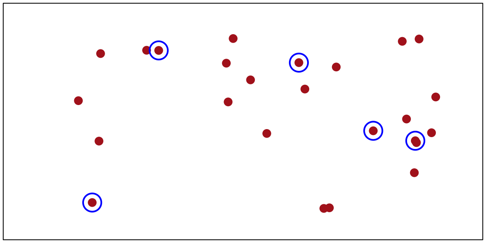
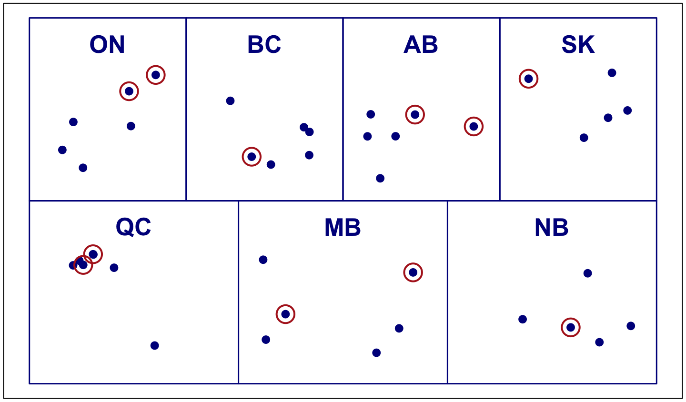
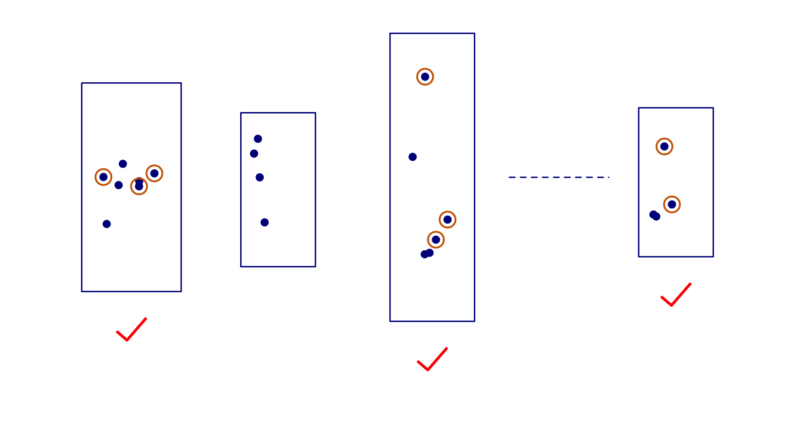
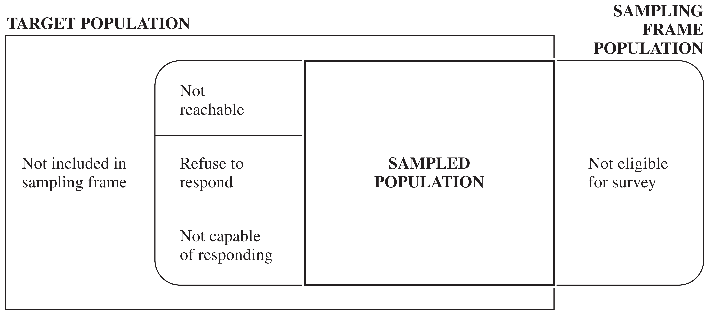

Introduction to Sampling Survey
Shere Hite’s book Women and Love: A Cultural Revolution in Progress (1987) had a number of widely quoted results:
The book was widely criticized in newspaper and magazine articles throughout the United States. The Time magazine cover story “Back Off, Buddy” (October 12, 1987) called the conclusions of Hite’s study “dubious” and “of limited value.”
A simple random sample (SRS) is the simplest form of probability sample. An SRS of size n is taken when every possible subset of n units in the population has the same chance of being the sample.

Figure 1
In a stratified random sample, the population is divided into subgroups called strata. An SRS is selected independently from each stratum. Strata are often subgroups of interest—regions of a country, terrain types, or firm sizes. Stratification often increases precision because elements within a stratum tend to be more similar than randomly selected elements from the whole population.

Figure 2
In a cluster sample, observation units are aggregated into larger sampling units called clusters.
Example: to survey Lutheran church members in Minneapolis without a list of all members, take an SRS of churches (clusters), then subsample members within each selected church (observation units). This is convenient, but members of the same church may be more similar to each other than a random sample of Lutherans, so a cluster sample may provide less information than an SRS of the same size.

Figure 3
Reading suggestions:
Observation unit An object on which a measurement is taken; also called an element. In human population studies, observation units are often individuals.
Target population The complete collection of observations we want to study. Defining the target population is often difficult—for example, should a political poll target all eligible adults, all registered voters, or all who voted last election?
Sample A subset of a population.
Sampled population The collection of all possible observation units that might have been chosen in a sample—the population from which the sample was actually taken.
Sampling unit A unit that can be selected for a sample. We may want to study individuals but lack a list of them; instead, households serve as sampling units while individuals remain the observation units.
Sampling frame A list, map, or other specification of sampling units in the population from which a sample may be selected (e.g., a list of telephone numbers, street addresses, or farms).
In an ideal survey, the sampled population equals the target population, but this ideal is rarely met. Not all persons in the target population are in the sampling frame, and some in the frame are not reachable, refuse to respond, or are not capable of responding.

In the Hite (1987) study: the element was an individual woman, the target population was all adult U.S. women, but the sampled population was women belonging to women’s organizations who would return the questionnaire.
Selection bias occurs when part of the target population is not in the sampled population, or more generally, when population units are sampled at a different rate than intended.
A sample of convenience is often biased, since units that are easiest to select or most likely to respond are usually not representative of harder-to-select or nonresponding units.
Undercoverage — failing to include all of the target population in the sampling frame. The U.S. Behavioral Risk Factor Surveillance System survey (telephone-based) misses households without phones, and historically missed cell-only households; coverage varies by region and income.
Overcoverage — including units in the sampling frame that are not in the target population, e.g., interviewers including under-18 respondents in an adults-only radio survey.
Failing to obtain responses from all of the chosen sample. Nonresponse distorts survey results even when other sources of selection bias are minimized.
Nonrespondents often differ critically from respondents, but the extent of that difference is usually unknown. Some published surveys have response rates as low as 10%—it is difficult to generalize results when 90% of the sample cannot be reached or refuses to participate.
When a response differs from the true value, measurement error has occurred. Measurement bias occurs when responses tend to differ from the truth in one direction. Like selection bias, it must be considered and minimized at the design stage.
Sampling error results from taking one sample instead of examining the whole population—the basis for a poll’s margin of error. A different sample would likely give a different result; sampling errors are reported in probabilistic terms.
Nonsampling errors (selection bias, measurement error) cannot be attributed to sample-to-sample variability. They are often far larger than the reported sampling error—a survey may proudly report a 3% margin of error from a 30% response rate, while ignoring tremendous selection bias.